Software Engineer and Designer
09
featured projects
05
featured articles
05
education milestones
Modern products, polished interfaces, and thoughtful digital experiences.
I am Esraa Abduallah, a computer science graduate and product-minded engineer who enjoys building with React, Next.js, Python, Django, and AI while keeping the experience clear, elegant, and human.
React and Next.js
Python and Django
UX design
AI product experiments
Writing and blogging
Code, coffee, and music
Available for product-focused collaborations

Current focus
Web development, AI tools, and user experience design.
Personal side
Tech girl, music enthusiast, and writer who enjoys thoughtful ideas.
Engineering with clarity, personality, and care.
My work sits between implementation and design. I enjoy taking an idea from concept to interface, shaping both the experience and the logic behind it so the final product feels intentional from the first scroll to the final interaction.
The portfolio already reflected a lot of who I am: software engineering, design, AI, computer science, writing, and a love for playful creativity. This new version keeps all of that content while presenting it through a cleaner, more professional editorial direction.
Problem solving
Curiosity
Technical writing
Product thinking
Skills
Tools gathered across engineering, product thinking, and experimentation.
The previous site called this my toolbox. That is still the right idea. These are the tools and strengths I keep coming back to when building products that need both craft and momentum.
Frontend and interface systems
Responsive, polished UI work with strong hierarchy, rhythm, and interaction quality.
JavaScript
React
Next.js
Tailwind CSS
Backend and application logic
Practical full-stack work that supports real workflows and product ideas.
Python
Django
GraphQL curiosity
Testing mindset
Working style and strengths
The old site highlighted passion and problem solving. Both still belong here.
Problem solving
Passion
AI exploration
Writing and blogging
Services
From concept to interface to implementation.
The original website highlighted three areas: UX design, web development, and AI models. They remain the strongest themes in the work shown here.
UX design
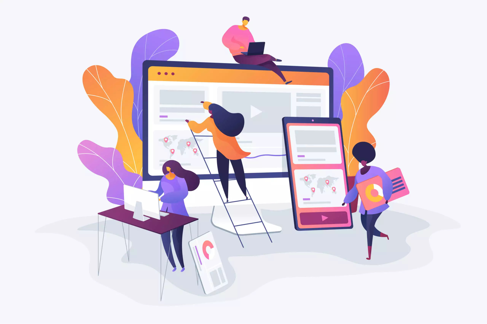
Interfaces that feel intentional and easy to trust.
I care about hierarchy, spacing, clarity, visual rhythm, and interaction details.
UI direction and visual refinement
Responsive layouts across desktop and mobile
Thoughtful interaction and content flow
Web development
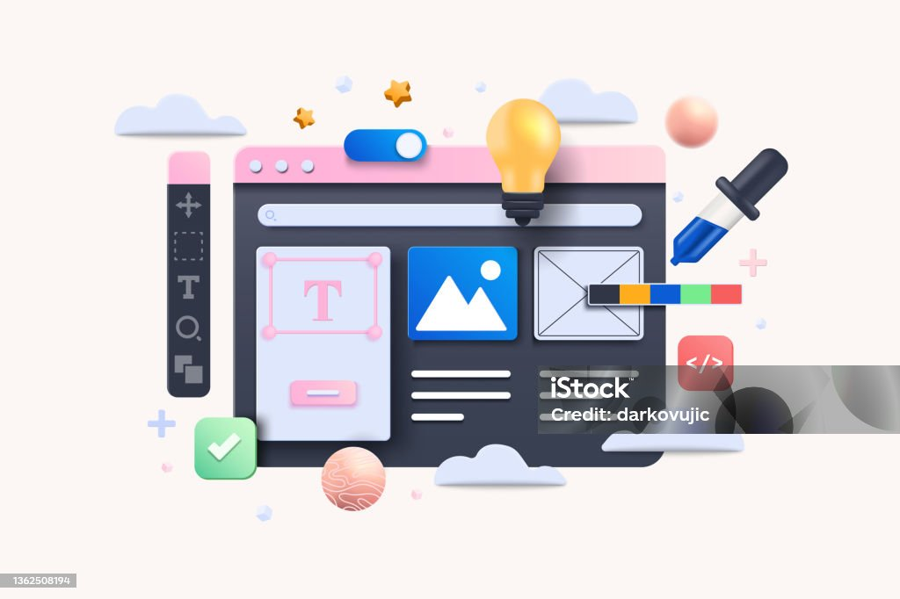
Modern web products built with practicality and polish.
I build frontends that look sharp and backends that support real workflows.
React and Next.js product interfaces
Python and Django implementation
Clean, scalable single-page experiences
AI models
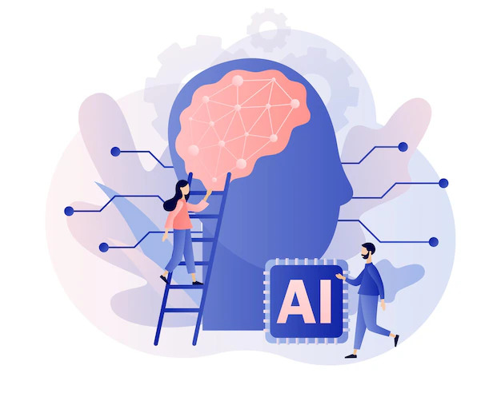
AI-assisted ideas shaped into useful experiences.
I enjoy exploring AI through practical products, experiments, and assistant-style tools.
AI product concepts and prototypes
Experimentation grounded in user value
Clear UX for complex technical ideas
Education
A learning path built through study and focused self-development.
This section keeps the same milestones from the previous site, including certifications and the standout academic achievement that helped shape the foundation of my work.
Computer Science Degree
Ainshams University
Ranked 1st
2019
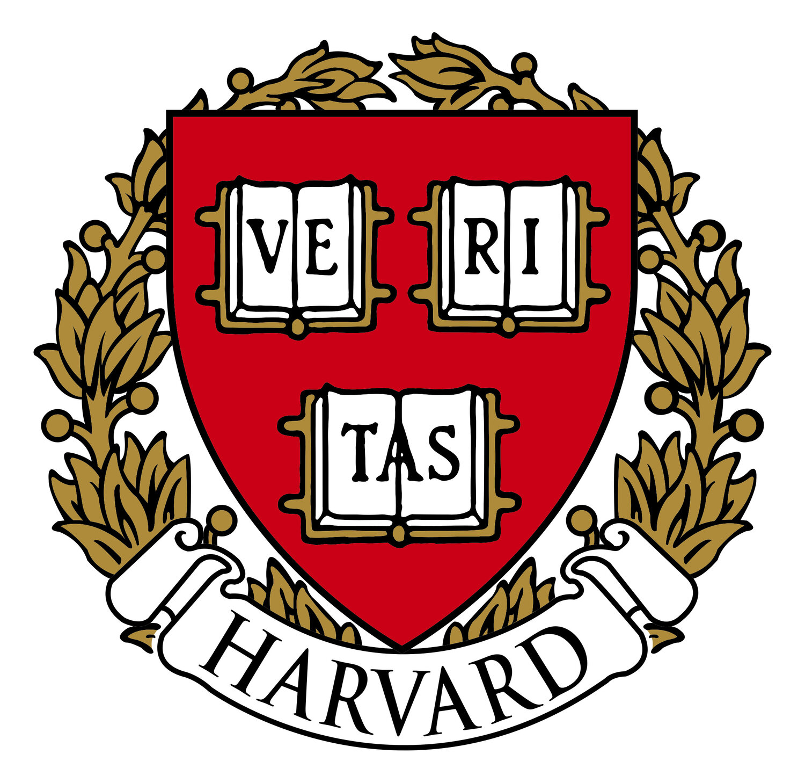
2025
2024
2020

2020
Selected Work
Projects across AI, productivity, travel, music, events, and playful product ideas.
Every project below comes from the previous site. The content is preserved, but the presentation is now cleaner, sharper, and easier to scan.
01
Live app
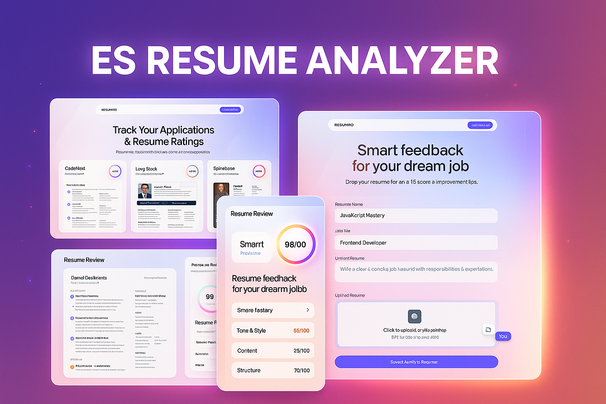
Resume Analyzer
An AI-focused resume analysis experience that turns profile review into a clearer workflow.
02
Concept
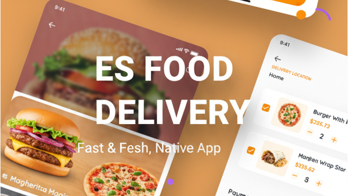
Food Delivery
A delivery experience focused on browsing, choice, and smooth ordering interactions.
Public link unavailable
03
Live app

Travel Plans
A flight discovery and planning interface designed around quick comparison and clarity.
04
Video demo

Es Relative Pitch Trainer
A music and coding crossover project created to support ear training in an interactive way.
05
Video demo
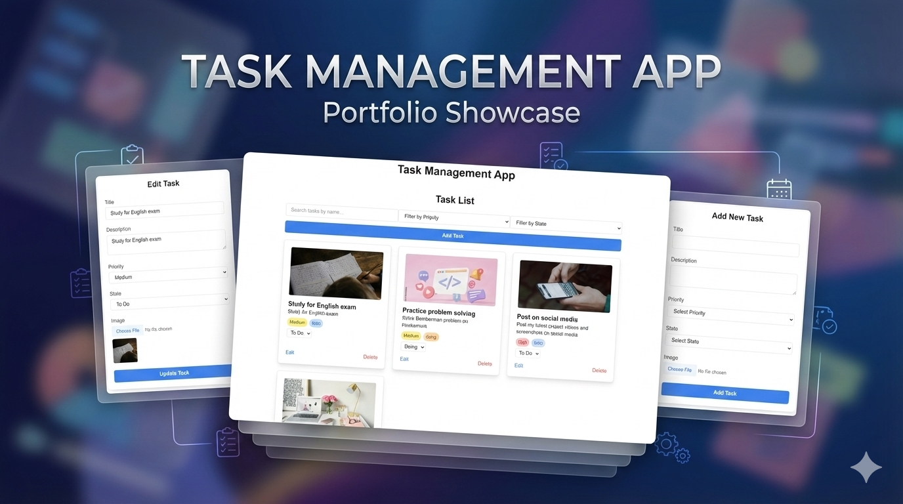
Task Manager
A productivity-focused experience built around tasks, organization, and workflow.
06
Video demo
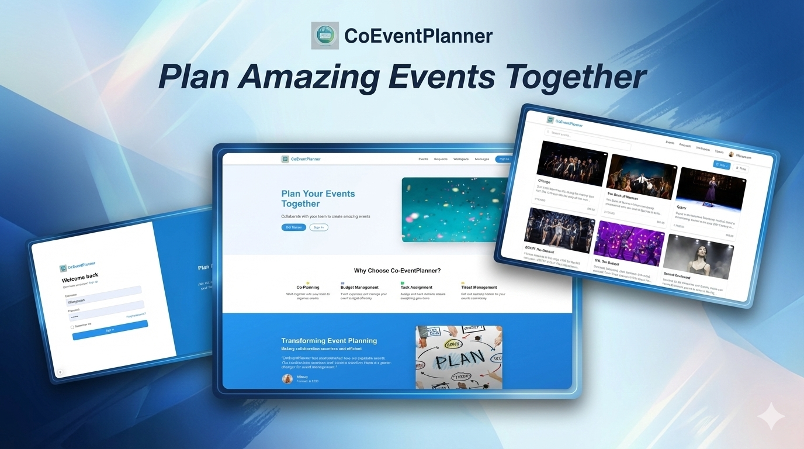
CoEventPlanner
A collaborative event planning product centered on coordination and shared visibility.
07
Video demo
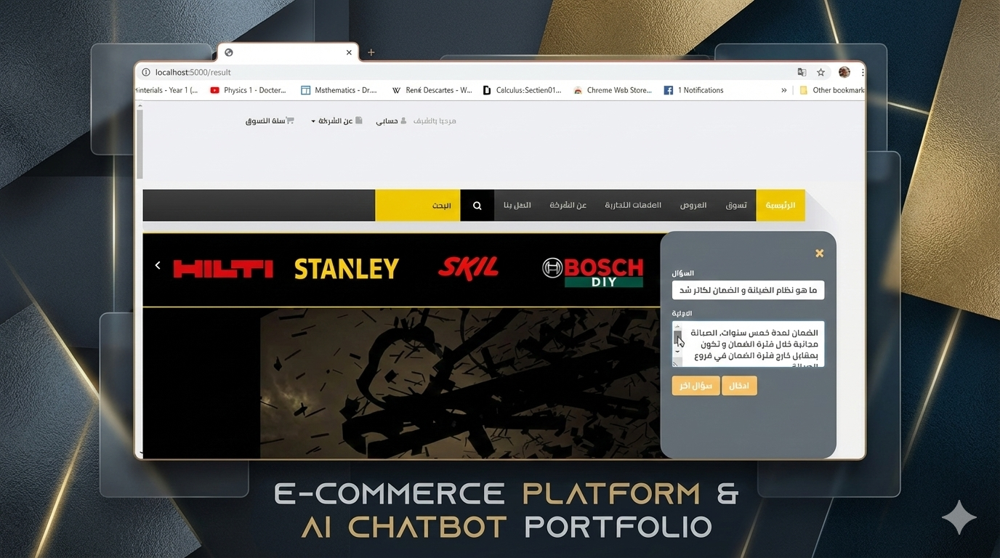
CRA (Customer Robot Assistant)
An assistant-oriented concept exploring customer support through a guided interface.
08
Video demo
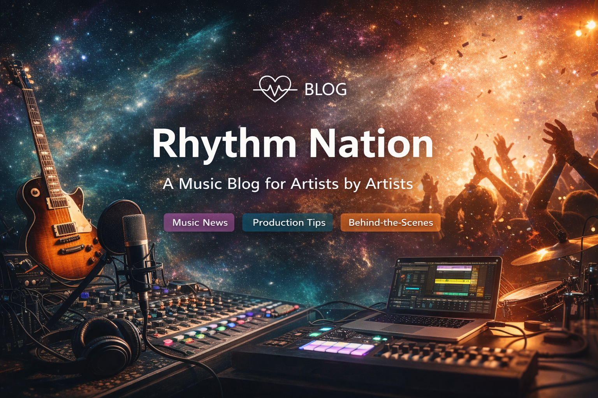
Astro Music Blog
A music-led editorial experience that blends content, presentation, and personality.
09
Playable
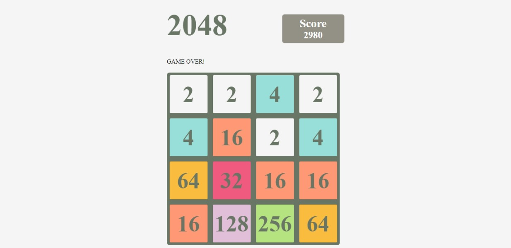
Logic Puzzle
A playable puzzle project that turns logical progression into a clean interactive game loop.
Writing
Articles on AI, music, code, and digital culture.
The old website already made it clear that writing matters to me. These featured pieces keep that voice visible and connect product work with reflection, learning, and curiosity.
01
->
02
->
03
->
04
->
05
->
Coding Melodies with Python
A practical piece about building a small tool for ear training with Python.
Modern vs Traditional AI
A reflection on integrating AI into the workflow and exploring core ideas from scratch.
Can AI Learn from Artwork in the Same Way Humans Do?
A question about artistic learning, copyright, and creative processes.
Exploring Music from Different Perspectives
Looking at melody through sheet music, MIDI files, and code.
90's Tech Rewind
A nostalgic look at tech memories and digital culture from that era.
Interested in building something thoughtful together?
If you are looking for someone who cares about both how a product works and how it feels, I would be happy to connect. The quickest path is email, and the social links below stay from the previous site.